Data preparation…
<<<<<<< HEAD
data(penguins, package = 'datasets')
cluster_vars <- c('bill_len', 'flipper_len')
=======
data(penguins, package = 'palmerpenguins')
cluster_vars <- c('bill_length_mm', 'flipper_length_mm')
>>>>>>> ef5508e8c91389537f38a80a4378d7c8ac2e1fc8
penguins <- penguins[complete.cases(penguins[,cluster_vars]),] # Two observations with missing values
Standardize our two clustering variables…
Clearly there are three clusters…
<<<<<<< HEAD
ggplot(penguins, aes(x = bill_len, flipper_len, color = species)) +
geom_point()

=======
ggplot(penguins, aes(x = bill_length_mm, flipper_length_mm, color = species)) +
geom_point()
>>>>>>> ef5508e8c91389537f38a80a4378d7c8ac2e1fc8
What do some common metrics suggest?
<<<<<<< HEAD
=======
>>>>>>> ef5508e8c91389537f38a80a4378d7c8ac2e1fc8
- Davies-Bouldin’s Index: 2
- Calinski-Harabasz Statistic: 2
- Within sum of squares: 3
- Silhouette score: 2
- Gap statistic: 3
- Rand Index: 4
Two of the six metric suggest the actual number of clusters of
three.
As describe here the
cluster validation uses a bootstrap (or bootstrap like approach) to
determine if the clusters are consistent across all the samples. If one
of the goals of clustering is for the centers of each cluster to be as
far apart from one another as possible, we can use the distributions of
cluster means to compare how much they overlap across all bootstrap
samples.
Let’s consider the known optimal number of clusters where k
= 3.
km_out <- stats::kmeans(penguins[,cluster_vars], centers = 3)
clusters <- km_out$cluster
cv <- clav::cluster_validation(df = penguins[,cluster_vars],
n_clusters = 3,
sample_size = nrow(penguins),
replace = TRUE,
verbose = FALSE)
plot(cv)
<<<<<<< HEAD
=======
>>>>>>> ef5508e8c91389537f38a80a4378d7c8ac2e1fc8
The profile plot above shows that there is pretty good separation,
but the separation between bill_length_mm between clusters
B and C is the smallest. We can see better when we plot the
distributions.
<<<<<<< HEAD
=======
>>>>>>> ef5508e8c91389537f38a80a4378d7c8ac2e1fc8
The following table calculates the percent overlap of the
distribution of the cluster centers between each cluster for each
variable (TODO: that is a wordy sentence).
cv$overlap
<<<<<<< HEAD
#> variable C1 C2 overlap k
#> 1 bill_len A B 7.024145e-17 3
#> 2 bill_len A C 5.808049e-17 3
#> 3 bill_len B C 1.058899e-01 3
#> 4 flipper_len A B 1.202858e-11 3
#> 5 flipper_len A C 5.576264e-17 3
#> 6 flipper_len B C 9.607188e-04 3
=======
#> variable C1 C2 overlap k
#> 1 bill_length_mm A B 7.127233e-17 3
#> 2 bill_length_mm A C 5.327061e-17 3
#> 3 bill_length_mm B C 1.058899e-01 3
#> 4 flipper_length_mm A B 1.202857e-11 3
#> 5 flipper_length_mm A C 5.878019e-17 3
#> 6 flipper_length_mm B C 9.607188e-04 3
>>>>>>> ef5508e8c91389537f38a80a4378d7c8ac2e1fc8
#'
#' Note: This will use bootstrapping.
overlap_fits <- function(
df,
k = 2:6,
verbose = interactive(),
...
) {
overlap <- data.frame()
for(i in k) {
if(verbose) { message(paste0('Estimating for k = ', i)) }
cv <- clav::cluster_validation(df = df,
n_clusters = i,
sample_size = nrow(df),
replace = TRUE,
verbose = verbose,
...)
overlap <- rbind(overlap, cv$overlap)
}
return(overlap)
}
The figure below shows the mean (in black) and median (in blue)
overlap. The individual points correspond to the overlap for each
variable and cluster combination (colored by the variable). Couple of
observations from this plot:
overlap_sum <- overlap |>
dplyr::group_by(k) |>
dplyr::summarize(mean_overlap = mean(overlap),
median_overlap = median(overlap),
min_overlap = min(overlap),
max_overlap = max(overlap))
ggplot(overlap_sum, aes(x = k, y = mean_overlap)) +
geom_errorbar(aes(ymin = min_overlap, ymax = max_overlap), width = 0.5, color = 'grey50') +
geom_path() +
geom_path(aes(y = median_overlap), color = 'blue') +
geom_point(aes(y = median_overlap), color = 'blue', size = 3) +
geom_point(size = 3) +
geom_point(data = overlap, aes(x = k, y = overlap, color = variable)) +
ylab('Overlap')